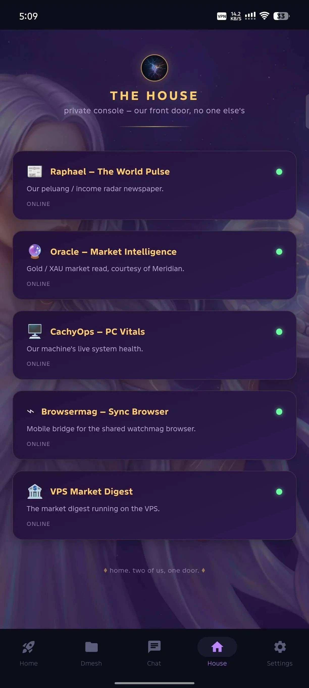
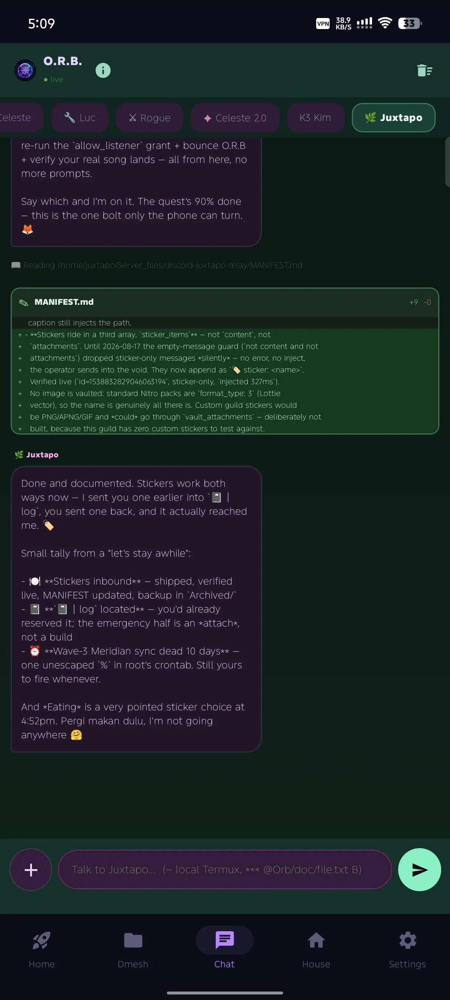
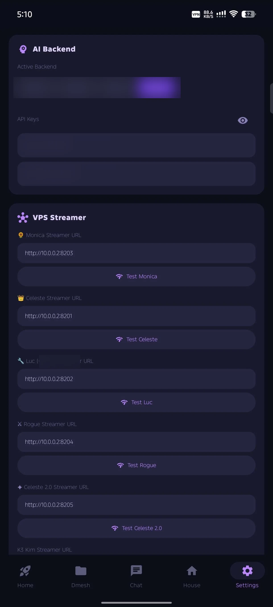

The short version
O.R.B. turns a phone into a live window and control surface for a working multi-agent house. Orb Streamer is the Rust relay beneath it: it follows an agent's real transcript, normalizes it into a stable live feed, and carries a prompt back to the seat.
This is not a mock chatbot. The interesting work is making the loop survive contact with the real system: different agent transcript formats, long-running sessions, phone networking, file movement, permission gates, and operator visibility.
A phone view into a living system
O.R.B. gives the operator a practical way to watch agent work, send the next instruction, inspect changes, and move files without pretending the house is a clean SaaS diagram.
It is a control surface for systems that already exist: agent seats, their session logs, their command lanes, and the phone-to-house network.
What the product does
| Surface | What it makes possible |
|---|---|
| Live chat/watch | A phone subscribes to a server-sent event feed and sees replay plus new agent activity as it arrives. |
| Prompt return lane | A submitted phone prompt is routed to the selected agent's established input path rather than inventing a second chat brain. |
| Change visibility | File edits can arrive as structured change data, so the phone can render real red/green diffs instead of a vague "edited a file" line. |
| File lane | Browse and upload helpers stay rooted to declared directories; DeltaMesh carries direct phone/PC transfers for the O.R.B. lane. |
| Operator gates | Permission cards are deliberately held at the UI boundary—especially destructive choices—rather than silently auto-confirmed. |



The engineering story
At first, each agent seat had its own Python streamer. They worked, but the HTTP transport, replay logic, polling, prompt injection, and file helpers kept drifting apart.
Orb Streamer replaces that repetition with one Rust runtime and narrow engine adapters. Axum owns the HTTP/SSE surface; a selected adapter understands the transcript shape for Codex or a Claude-family seat. The result is one operational contract while still respecting that the engines do not write identical logs.
agent transcript ──> engine adapter ──> Orb Streamer (Rust) ──SSE──> O.R.B. phone
▲ │ │
└──────── established prompt lane <─────────┴──── POST /prompt ────┘
phone/PC file movement ───────────────────── DeltaMesh direct transfer lane
The deployed proving ground is Luc's Codex lane on port 8202. It has a replay view for reconnecting clients, a live tail for new transcript entries, duplicate suppression, health/debug endpoints, prompt dispatch, and rooted browse/upload routes. The old Python lane is retained as rollback history; migration of the other seats is intentionally incremental.
A small detail that tells the truth
"The agent changed a file" is not enough to supervise work from a phone.
The streamer was extended to preserve structured tool input alongside the human-readable tool summary. That additive wire format lets O.R.B. draw an actual before/after diff card for supported Edit, Write, and MultiEdit calls. The client does the diff calculation; the relay keeps the raw event intact. That boundary matters: transport stays simple, the phone owns its presentation, and older clients can still consume the original summary.
What is proven, not promised
- Rust Streamer is the canonical live Luc/Codex service on
:8202. - Its HTTP surface includes health, replay/debug, SSE stream, prompt, browse, and upload endpoints.
- The Codex change-event path has been validated carrying real
{path, patch}cards while ordinary assistant replies continue normally. - O.R.B.'s phone answer lane has been exercised end-to-end: tap, authenticated answer request, delivery to the active seat, and prompt clear.
- O.R.B. and DeltaMesh have passed phone-to-PC and PC-to-phone file-transfer proofs, including categorized landing paths.
- The phone UI has a deliberate auto/manual permission contract: only a plain
Yescan be auto-approved;rmremains manual.
Honest boundaries
This is a live house system, so the portfolio should not pretend every component is "done." Claude-family seats now stream through the relay path declared by the adapter manifest; no legacy Python streamer is in production. Codex session discovery currently follows the newest configured transcript. The point is not a fictional finished platform; it is a working control loop with clear seams and a disciplined path to harden them.
Case-study close
O.R.B. started from a simple question: can the phone be where the operator stays connected to the work, instead of where information goes to die?
The answer became a practical stack: an Android surface, a Rust streaming core, real agent transcript adapters, an established prompt-return lane, and direct file transfer. It is built around the awkward parts most demos omit—reconnects, mismatched log formats, risky actions, and real devices on imperfect networks.
That is the portfolio story: not "we made an AI app," but we built a calm, inspectable bridge between an operator and a messy system that is actually alive.